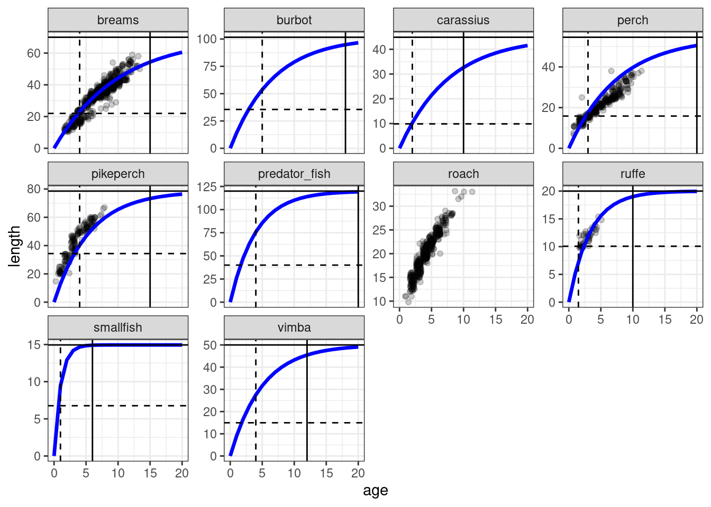

Finding species parameters
Selecting model species
How do we decide which species to include in the model? There are many ways to approach it and no clearly set rules. Of course you want to include species that you are interested in, but then also perhaps some other important species in the ecosystem. Mizer actually has a powerful framework that allows you to explicitly model only your focus species and represent the rest of the ecosystem with ‘background’ species. The sizes and abundances of these ‘background’ species are assumed to follow the power law, so that the total community biomass approximately represents the Sheldon spectrum. This is only mentioned here for your information, as we will not go into these details during this week.
If you have your own ecosystem that you want to model during this week, then you also have your own list of species. Ideally you may want to have somewhere around 4 to 20 species, as this allows for interesting but also tractable dynamics (although tracking processes in 20 species might be quite challenging). For the Curonian Lagoon model we selected key ecosystem fish species that are commonly observed in scientific monitoring surveys, and which live and reproduce in the ecosystem (as compared to several migratory species, which can be abundant briefly but don’t have a big role in the ecosystem in the long term).
The list of species and their general feeding habits or trophic group are listed below. We include scientific and model name, the latter representing a short name that we can conveniently use and display in plots.
| Scientific name | Model name | Trophic group |
|---|---|---|
| Pungitius pungitius, Alburnus alburnus | smallfish | planktivore |
| Gymnocephalus cernua | ruffe | benthivore |
| Abramis brama, Blicca bjoerkna | breams | benthivore |
| Rutillus rutillus | roach | benthivore |
| Vimba vimba | vimba | benthivore |
| Carassius carassius | carassius | benthivore |
| Perca fluviatilis | perch | omnivore |
| Sander lucioperca | pikeperch | predator |
| Lota lota | burbot | predator |
| Esox lucius, Aspius aspius | predators | predator |
Summary of species parameters
At this point it might be useful to go back and rewatch the second half of Ken Andersen’s introductory lecture, which explains species parameters used in mizer. It is great how mizer can start building a model with only very few species parameters! For most other parameters, if values are not supplied by the user, mizer will fill them with default values using size-based theory or species averages.
However, if you don’t like defaults you can change them all. Advanced users can even overwrite mizer functions that calculate parameters. If you feel you need more advanced reading you can explore it here

You can find the complete list of species parameters used in mizer in the help page of species_params().
Parameters we provide
For each of the species that we include in our model we have some information that we have put into a species parameter table and saved it as a .csv file. The table has one row for each species and one column for each species parameter. We can read this into a data frame with
curonian_species_params <- read.csv("curonian_species_params.csv")We will not show you all of our parameters for all species, because we want you to look up some parameters yourself. So we overwrite some of our parameters with NA.
curonian_species_params[4, c("w_inf", "w_mat", "k_vb",
"a", "b", "mat_age", "max_age")] <- NA
curonian_species_paramsWe will now explain these species parameters. Because there is so much information that would be worth discussing, we have put some material into collapsed sections. You can click on these to expand them if you want to learn about those additional details.
- As Ken stressed in his video, a name
speciesand the asymptotic sizew_inf(in grams) are the only species parameter for which mizer does not suggest a default value. We also include the scientific species name inlatinNameand the trophic group infuncgr, both of which mizer ignores.
We find it sensible to provide some additional parameters:
The species maturation body size
w_mat. Usually you would want to set them up yourself from life-history data, but if no data is available mizer will use0.25 * w_inf. For the Curonian Lagoon model we selected maturation sizes from available biological data.Von Bertalanffy growth rate parameter
k_vb. In mizer the growth rate is not fixed but depends on the abundance of prey. So mizer does not actually use the von Bertalanffy growth curves. However, it can use the information you give to choose its predation parameters in such a way that the emergent growth curves will be close to von Bertalanffy curves. Specifyingk_vbis an alternative to specifying the coefficienthin the maximum intake rate, as was discussed by Ken Andersen in his introductory video. The von Bertalanffy K parameter can often be looked up on FishBase or estimated from parameters in the same family.
The growth curve of a fish is commonly reported as a von Bertalanffy growth curve. The simplest version of von Bertalanffy curve describes the length of a fish as a function of two parameters; the asymptotic length L_\infty and the von Bertalanffy growth coefficient K (k_vb in mizer):
L_{(t)} = L_\infty (1-e^{-Kt})
where t is the age. L_\infty represents the asymptotic length and K is an instantaneous annual growth rate. This value shows how quickly a species will approach its asymptotic length. In many species 1/K gives an approximate age at maturation, although this can vary.
Mizer, however, uses two other parameters, W_\infty (w_inf in Mizer) and h, where W_\infty represents the asymptotic weight and h the size-scaled maximum consumption rate. Ken Andersen discusses K and h in his introductory lecture. Fortunately, the two sets of parameters are related, and one can derive h and W_\infty from von Bertalanffy K and L_\infty.
The parameter h represents the maximum consumption rate of a fish, scaled by size. The value of h varies between 4 – 400, with a geometric mean around 22 g^{-0.25}/year across all fish species (Andersen 2019, chap. 2 and 11). If we have reliable von Bertalanffy growth curve values, we can derive a more precise estimate of h as: h \approx 4.75 K\cdot L_\infty^{0.75} (with K given in 1/years and L_\infty in cm).
The von Bertalanffy growth function is widely used in fisheries and ecology. However, it should be treated with some caution. To estimate the growth function coefficients reliably we need sufficient amounts of data from young and old individuals. The latter is often not the case for intensively fished species, because old fish are simply not present in the ecosystem. Young individuals are also often not observed, especially if data comes from fisheries rather than scientific surveys. If we do not have old fish in the sample the asymptotic length L_\infty cannot be properly estimated. As a result, estimates of K will also vary extensively across samples. You can see that for yourself in our exercise below.
We have also included some parameters that mizer ignores, namely the age at maturity mat_age and the maximum age max_age. We find these useful as a sanity check on our choices for w_mat and k_vb. Expand the following section if you want to learn more.
Once we collect species parameters from FishBase we might want to know how well these parameters reflect the actual growth data, or at least knowledge about maximum and maturation size. Of course if we have size-age data we can estimate the Von Bertalanffy growth curve parameters ourselves. But for now we will just plot some sample size-age observations on top of the von Bertalanffy curves defined by the parameters in our dataframe.
# Let's load example data on length at age
size_at_age <- read.csv("size_at_age.csv")
# Load species parameters
sp <- curonian_species_params
# If the von Bertalanffy t0 parameter is missing, set to 0
if (!hasName(sp, "t0")) {
sp$t0 <- 0
}
# convert weights to lengths
sp <- sp |>
mutate(l_mat = (w_mat / a) ^ (1/b),
l_inf = (w_inf / a) ^ (1/b)) |>
select(species, l_mat, l_inf, mat_age, max_age, k_vb, t0)
# create data frame with von Bertalanffy curves
vb <- expand.grid(species = sp$species, age = 0:20) |>
left_join(sp, by = "species") |>
mutate(length = l_inf * (1 - exp(-k_vb * (age - t0))))
ggplot() +
geom_point(aes(x = age, y = length), data = size_at_age,
position = "jitter", alpha = 0.2) +
geom_line(aes(x = age, y = length), data = vb, lwd = 1.2, col = 'blue') +
geom_hline(aes(yintercept = l_inf), data = sp) +
geom_hline(aes(yintercept = l_mat), data = sp, lty = 2) +
geom_vline(aes(xintercept = max_age), data = sp) +
geom_vline(aes(xintercept = mat_age), data = sp, lty = 2) +
facet_wrap(vars(species), scales = "free_y") +
theme_bw()
In this plot we can see the representation of parameters we collected from FishBase or other sources: Von Bertalanffy growth curve (blue line), maturation weight (horizontal dashed line), maturation age (vertical dashed line), asymptotic weight (horizontal solid line) and maximum age (vertical solid line). The available data on size at age is shows with dotpoints. When we plot such data we want to make sure that Von Bertalanffy curves reflect the growht data (if available) sufficiently well, and that the von Bertlanffy curve also approximately crosses the intersection of maturation weight and age.
You probably noticed that there is no curve for roach. Well, this is what Exercise 1 is about.
-
The preferred predator-prey mass ratio
beta. We discussed the importance of the predation kernel last week. The default value forbetain mizer isbeta = 30. However, higherbetavalues are appropriate for fish that feed on plankton or benthic invertebrates. We need to keep in mind thatbetarepresents a preferred predator prey size ratio, not the realised one. Most species prefer to eat larger prey, but their diets are dominated by small prey, since smaller individuals are more common.For the Curonian lagoon model we set the following beta values: we assume 100 for for predatory fish, 10000 for large benthivores, 8000 and 600 for smaller benthivores and 5000 for planktivorous fish. We leave the
sigmavalues at their default of 2, although planktivores and benthivores would normally feed over a larger range of sizes and thus largersigmavalues might be appropriate for them and smaller ones for predatory species.sigmais a standard deviation of the predation kernel on a natural log scale, but it is easier to understand it when looking at the predation kernel plots, which we will do in the last tutorial. We will revisit our preliminary choices in the Refine your model tutorial when we can visualise what the resulting diets will look like. The observed biomass for each species in grams,
biomass_observed. You will not be able to calibrate your model to a realistic system without some information on relative species abundances. Note, thebiomass_observedreflects the average species biomasses in your model system for the period that you want to calibrate your system to. Usually we do not have data on observed biomasses of all fish sizes combined, since we usually do not observe larvae. This we can specify in thebiomass_cutoffparameter, where we tell mizer the smallest size of fish to use for comparing model and observed biomasses. In our case we give the value of 2g for all species (about 6cm long), because observed data comes from scientific monitoring surveys.
To calibrate the rate of reproduction (the rate at which eggs are entering the first size class in each species), mizer needs some information about species abundance or biomasses. Multi-species models are often calibrated using average observed biomases or average spawning stock biomasses. The units of the area or volume over which these biomasses were observed depend on your choice, mizer does not care about it (see section Units in mizer in this reference page). Sometimes we can use relative biomasses, which scale the relative abundances of species in the model. Remember, these are just average values, not time series of observations.
Observed biomasses could be derived from scientific surveys, underwater surveys or other observations or knowledge about relative biomasses of species. In well studied systems you might have data about biomass estimates, catches and fishing mortality from stock assessments. These type of data are often used to calibrate mizer models, although we need to be aware of the fact that stock assessment estimates are also model estimates and come with their own assumptions (e.g. they are single species estimates).
Fisheries yields in terms of total average yearly catches for each species in grams in
yield_observed. While these are not used directly by mizer to set up the model, mizer can display this information in graphs that you can use to calibrate the model manually. We will discuss this in the Refine your model tutorial.Species length-weight conversion coefficients
aandb. The lengthlin cm and the weightwin grams of an average individual are related as: w = a \cdot l^b For many species the length-weight conversion coefficients a and b are available on FishBase. These coefficients are needed if maximum or maturation body size are provided in length or if we estimatehfrom Von Bertalanffyv_bk. If you do not provide values, mizer will assume a = 0.01\ \mathrm{g/cm}^{-3} and b = 3. For the Curonian Lagoon model we have taken values from FishBase.
We have included another column in our species parameter frame that mizer ignores: resilience. This is just information for ourselves that we will use when we calibrate the sensitivity of species to change in week 3. You can have an arbitrary number of additional columns that contain information meaningful to you but ignored by mizer.
Default parameters
There are many other parameters that are used to describe species properties, but which we have not provided in our species parameter data frame because mizer has default ways to calculate them based on the size theory expectations. You can read about the theory in various publications or in the excellent Ken H Andersen book “Fish Ecology, Evolution, and Exploitation” (2019). So you don’t need to provide them, but you do need to understand the defaults and think whether you are happy with them. Mizer help pages provide a good summary of species parameters and links to functions that use these parameters.
The species search volume is set from the search rate constant
gammaand its body size scaling exponentq. If no values are providedgammaandqare set so that when prey abundance is described by the power law with the exponentlambda, food search rate will lead to the juvenile feeding levelf0 = 0.6.The species maximum intake rate is set using the constant
hand the body size scaling exponentn. If no value is provided, the coefficienthis set so as to achieve Von-Bertalanffy growth rate based estimate of maturity size at a given maturity age (given the feeding levelf0 = 0.6). In multi-species models the exponentnis by default set to 2/3 but we choosen = 3/4.Species metabolic rate is set from the constants
ksand body size scaling exponentp. If no values are provided the coefficientksis set so that at maturation size metabolic expenditure requires a critical feeding level offc = 0.2. In multi-species models the exponentpis by default set to 0.7 but we choosep = n = 3/4. Maintenance expenditure can also include activity related energetic costs, using species activity coefficientkwhich scales linearly with body size (exponent of 1). By default this value is set to 0 and most mizer models do not include it.
Body size scaling exponents
We just said that we choose the allometric exponents n and p to be both equal to 3/4. There is a lot of debate about the correct values for these exponents. Some schools of thought argue that energy intake should scale with individual’s surface area (exponent of 2/3) whereas energy expenditure should scale with body volume (exponent of 1). Others suggest that food intake and metabolism exponents should both scale with 3/4. There are no clear rules and these exponents in reality are likely to vary across species.
Species external (also called background or baseline) size-independent mortality rate constant
z0This parameter determines the background mortality that affects all species size classes in the same way (it is a flat rate across sizes). If no values are provided mizer assumes that species with small maximum body sizes have much higher baseline mortality rate. For example, a species withw_inf= 35 g will havez0= 0.18, a species withw_inf= 150g will havez0= 0.11 and a species withw_inf= 14kg will havez0= 0.025.We already discussed the parameters involved in setting the investment into reproduction last week. The reproduction investment parameter
mdetermines the scaling of the investment into reproduction for mature individuals. By defaultm= 1 which means that after maturation the rate at which individual fish invests energy into reproduction scales linearly with size (if you want more information, you can find it here). This default can be changed to another value if different scaling is preferred (e.g. in case you might want to explore hyper-allometric reproduction investment options). The steepness of population level energy allocation to reproduction is determined byw_mat25, the size at which 25% of individuals are mature.The species minimum body size in the model
w_minis by default set to 0.001 in grams.We discussed the parameters
R_maxandereprolast week in the section on How reproduction is modelled.You can also modify availability of the resource to each of your species, as we have learned during week 1. This is set by the parameter
interaction_resourceand this value is set to 1 by default. We will however change this when we set up multiple resources in the next tutorial.Species food assimilation efficiency
alpha. If no value is provided mizer assumes 0.6.
If you want to change the default values for any of these parameters for any of the species, you just need to add a corresponding column to your species parameter data frame. You can put NA into those columns for the species where you want mizer to keep the default.
Exercise: collecting species parameters from FishBase
Our species parameter file is missing some parameters for roach (Rutillus rutillus). This is actually the most abundant species in the ecosystem. Your goal in this exercise is to find good values for the missing parameters for roach. We suggest that you use FishBase, where many modellers get their species parameters.
In your worksheet repository for this week you will find the spreadsheet file curonian_species_params.csv file. Open this in your favourite spreadsheet programme or editor. Then go to FishBase, use the knowledge you gained so far and:
1) Fill the NA values for roach.
2) Look up values for breams and see if you agree with our selection of parameter values. You can overwrite our values with your values. This will be your species parameter file.
Important! Make sure you check all the different sources of information that FishBase has. Scroll all the way down to “More information” section and explore Length-weight, Fecundity, Age/size, Food items, Diet and especially Growth sections.
Please commit the completed curonian_species_params.csv file to your worksheet repository and push it to GitHub (just select the file as you selected other modified files). You will be using that file again in the exercise in the next tutorial.
Here is a short video on exploring species parameters on FishBase:
Species interaction matrix
By default, mizer assumes that all species can interact with each other equally and that predation is determined solely by size. To change this assumption we need to provide a species interaction matrix. This matrix can include three different aspects (or a combination of all of them):
- Spatial and temporal overlap of species in a large ecosystem. This way the interaction matrix is set based on e.g. species occurrences in various fisheries surveys or observations and reflect the frequency of how often same species are found in same surveys. This is how species interactions are set up in the example North Sea model, which comes with mizer installation. Let’s check it (we will round the values to two decimal points). The North Sea interaction matrix file is called NS_interaction and comes with mizer installation.
round(NS_interaction, 2) Sprat Sandeel N.pout Herring Dab Whiting Sole Gurnard Plaice Haddock
Sprat 0.73 0.03 0.06 0.27 0.36 0.27 0.30 0.18 0.37 0.08
Sandeel 0.03 0.68 0.05 0.06 0.10 0.08 0.06 0.06 0.08 0.09
N.pout 0.06 0.05 0.80 0.30 0.09 0.30 0.02 0.31 0.08 0.55
Herring 0.27 0.06 0.30 0.66 0.29 0.37 0.20 0.28 0.28 0.35
Dab 0.36 0.10 0.09 0.29 0.81 0.33 0.38 0.22 0.56 0.13
Whiting 0.27 0.08 0.30 0.37 0.33 0.71 0.19 0.37 0.30 0.39
Sole 0.30 0.06 0.02 0.20 0.38 0.19 0.72 0.11 0.39 0.03
Gurnard 0.18 0.06 0.31 0.28 0.22 0.37 0.11 0.88 0.16 0.36
Plaice 0.37 0.08 0.08 0.28 0.56 0.30 0.39 0.16 0.72 0.11
Haddock 0.08 0.09 0.55 0.35 0.13 0.39 0.03 0.36 0.11 0.86
Cod 0.34 0.10 0.33 0.40 0.42 0.44 0.26 0.35 0.35 0.40
Saithe 0.02 0.02 0.29 0.13 0.03 0.10 0.01 0.12 0.03 0.26
Cod Saithe
Sprat 0.34 0.02
Sandeel 0.10 0.02
N.pout 0.33 0.29
Herring 0.40 0.13
Dab 0.42 0.03
Whiting 0.44 0.10
Sole 0.26 0.01
Gurnard 0.35 0.12
Plaice 0.35 0.03
Haddock 0.40 0.26
Cod 0.79 0.21
Saithe 0.21 0.66Species diet preferences or trophic groups. Sometimes we know that certain species do not eat other species. For example, some species are strictly bentivorous or herbivorous and they never eat any other fish, not even their larvae. In other cases we might have good evidence for specific diet preferences, although ideally such evidence should come from food selection experiments and these are very rare and maybe too specific to certain conditions. It is important to know that diet contents do not necessarily reflect preferences, but realised feeding. A species might prefer to eat bananas, but if nothing else is available it will eat other fish. The species interaction matrix, if reflecting diet preferences, should reflect preferred diets, not realised diets.
-
Species predator avoidance behaviour or vulnerability. Some species may be less available to other species because they are good at hiding, have spikes, or live in large schools which reduces their vulnerability to predation compared to solitary species. This could also be included in the species interaction matrix, but in the prey column.
For our Curonian Lagoon example model we used existing ecological knowledge and set up species interaction matrix as follows:
curonian_interaction <- read.csv("curonian_interaction.csv")
curonian_interactionIn our simple case the interaction matrix encodes two assumptions:
We assume that strictly benthivorous fish species (breams, roach, vimba, carassius) cannot eat any other fish. This is based on the available knowledge about feeding habits. The entries in the rows of the interaction matrix corresponding to these predators are set to 0 for all prey fish species.
We assume that all other fish can interact with all prey, hence the interaction matrix entries are set to 1 in the corresponding rows.
Gear parameters
Because most ecosystems are fished and we are calibrating to biomasses observed under some fishing level, we usually also need to include information on fishing intensity and fishing gear.
In mizer you can implement an arbitrary number of different gears, each with its own fishing effort, fishing different species with different selectivity and catchability. Gear selectivity curves can have different shapes (logistic, knife-edge and others). You can read more about this here.
You provide the information about the gears in a data frame similar to the species parameter data frame. Here is the gear parameter data frame we will use initially for our Curonian Lagoon model:
curonian_gear_params <- read.csv("curonian_gear_params.csv")
curonian_gear_paramsYou see that we have set up only a single gear, that we call “Main”. It targets all species in our model except “smallfish”. The value “sigmoid_length” in the sel_func column states that we model the size selectivity of the gear by a sigmoidal curve that is specified by giving the length l50 in cm at which 50% of the individuals are selected by the gear and the length l25 in cm at which 25% of the individuals are selected by the gear. We have simply set l50 to 30 and l25 to 26 for all species. That is certainly not quite correct and we will see in a later tutorial how to tune that.
The catchability column specifies how vulnerable the species are to commercial fishing. Some species live close to the shore or are otherwise less vulnerable to commercial fishing, so we will set their catchability to 0.5 or even to 0.2 for ruffe.
In mizer, the fishing mortality rates at size for each gear is the product of the size-dependent selectivity, the catchability and the fishing effort. We will use the above gear with a fishing effort of 0.3, which means that the fishing mortality for the fully selected individuals for the species with highest catchability will be 0.3 per year.
Summary
1) Mizer can choose defaults for most species parameters. Only a species name and the asymptotic size of each species is required.
2) Other important species parameters that we like to provide include the maturity size w_mat, the von Bertalanffy K parameter k_vb, the preferred predator prey mass ratio beta and the observed biomasses biomass_observed.
3) The species parameters are specified in a data frame with one row for each species and one column for each species parameter. You would usually create this in a spreadsheet and save it as a .csv file, ready to be loaded into R.
4) We briefly explained how mizer chooses defaults for many other parameters, often using allometric scaling assumptions.
5) If predation is determined not solely by size but also by species identity, we need to specify this in the interaction matrix.
6) Fishing can be set up with multiple gears, each possibly targeting multiple species. The parameters for these fishing gears are specified in a data frame with one row for each gear-species pair and one column for each parameter.